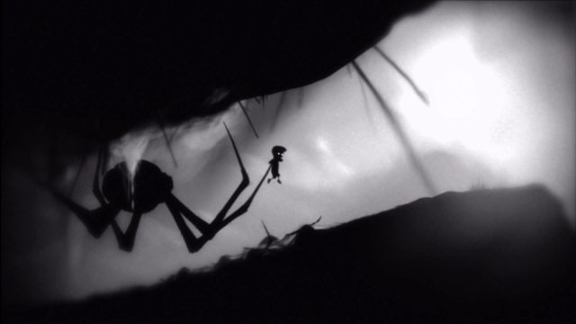

The first time I experienced a real strong memorable moment was the moment when the spider catches up to you and instead of simply impaling you like it had previously done many times, it gently grabs you and wraps The Boy up in its webbing. See screenshot below
Screenshot from LIMBO

Initially as you are running from the spider through the cave, you know the Boy is able to outrun it, but then you hit the area in the cave with webbing on the ground and suddenly you're going much too slow and can't jump. Then you notice the spider creeping into frame behind you, and immediately after you realise there are other corpses in the webs you are trapped in. At this time I was immersed in the game but then questioned from a persepective outside of the game whether I would actually be able to escape just barely and the game wanted me to have this feeling of barely surviving, or if I would in fact die here. Then the spider does its animation it had done before where it stabs at you lifting you off the ground and I immediately assumed I had died and would need to find another way through the cave when the Boy wakes up again. This time though, instead of the Boy being killed the spider slowly lifts you to more webbing and wraps your character up, only for you to then have to play the next section of the game with the Boy hopping around in the webbing. This moment is very memorable to me not only in how cinematic and perfectly scripted it was, and not only in the horrific imagery, but in how the game was able to genuinely persuade me inside and outside of the screen that the Boy had died, and then subvert this expectation with the spider wrapping animation. This is when I believe I realised and became aware of the Reality Effect on me during this game. The small patch of grass at the exit of the cave, the corpses in the webbing, the sharp branches or limbs through the cave, these small details have no immediate presence in the context of the narrative nor the context of gameplay, but yet they are deliberately placed there. According to Barthes, "Description is entirely different..." (than the Predictive): "it has no predictive mark... its structure is purely summatory and does not contain that trajectory of choices and alternatives which gives narration the appearance of a huge traffic-control center..." (Barthes The Reality Effect 142-143). Essentially Bathes posits that the back and forth between the predictive (narrative) elements, and the descriptive is what creates the reality effect. In the example of the spider cave, without the descriptive small details I would not have been able to return back to the immersion of the game as I would be still questioning what the game intended me to do, but without the predictive elements such as the boy and spider the situation presented would have no means of being immersed in the first place and no context in which to create these feelings using the descriptive.